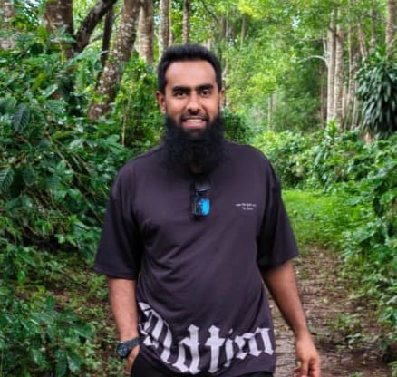

Mr. Ilham
“Every tree we nurture is a promise to the future.”
I founded Natures Treasure with a deep respect for nature and an unwavering belief that beauty, quality, and responsibility can grow together. What began as a personal vision to honor the rare and precious value of agarwood soon evolved into a larger mission: to create a business that preserves tradition while introducing modern, sustainable methods that protect the environment and elevate the experience of every client.
My goal has always been to build more than a company. I wanted to create a legacy rooted in trust, patience, and authenticity. Every plantation, every carefully nurtured tree, and every bottle of pure oud oil reflects the values I hold dear discipline, integrity, and a commitment to excellence. I believe that when we treat nature with care, it gives back in extraordinary ways, and that belief remains at the heart of everything we do.